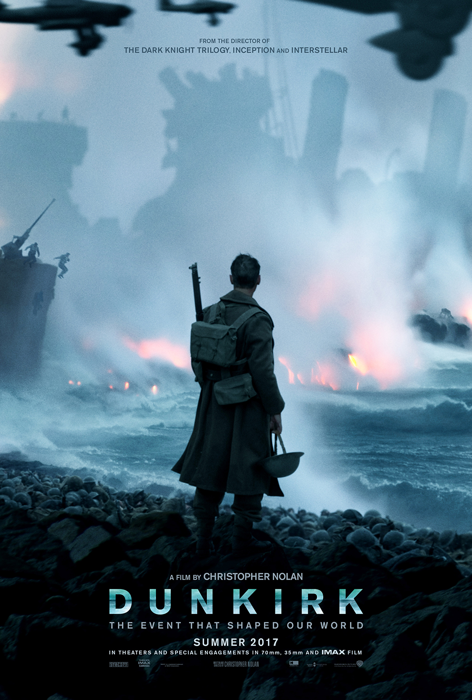

Дюнкерк Dunkirk

«Событие, которое изменило мир» История там разворачивается во время второй мировой между войсками союзников (Бельгия, Великобритания, Франция) против Немцев
(Германия). Нолан с самых первых кадров пускает нас в поток военных действий. Интересно, то что фильм не фокусируется на одном главном герое или двух... нет. По сути главных героев тут нет. Точнее
они есть, но многим может показаться, что они мало раскрытые по мере фильма. Просто они есть и все. Тут мнения начинают расходится, кому-то нравится, кто-то считает этот ход "плохим". НО! Я скажу так, что по мне
это было сделано специально. Да, Нолан никого не прописывал - намеренно! Потому что это фильм не о людях, а о войне! Как нежно и кратко показано место действий и несколько временных путей, которые сплетаются в одну,
превращаясь при этом в ясную картину. В этом фильме нет главного персонажа! Тут каждый, кто появляется в кадре - и есть своеобразный главный герой! Это война... весь фильм - война. Но, но, но... это вам не Майкл
Бэй, которые снимает экшен, как аттракцион. Нет. Тут каждая схватка - это эмоциональная спираль. Все показано в четких тонах, которые прекрасно передают то время. При этом всём каждые сцены умело переплетаются
между собой. Режиссер мало того, что меняет действия визуально, но еще выходит за рамки картины. Играется с форматом. То 16:9, а потом бац и 21:9, а потом обратно, что вполне работает для погружения в тонус фильма.
Про актеров скажу немного. Все играют хорошо. Чего стоит Том Харди, которой показывает эмоции с помощью глаз. Ради этого стоит и посмотреть, знаете ли Конец фильма меня так вообще порадовал! Он закончился правильными словами и правильной мыслью.
Это очень уникальный финал, как я считаю. По мне этот конец хорош, как минимум тем, что войско союзников хоть и выжило, и вернулось домой, но проиграло битву. И нет, тут это не просто для того, что "посмотрите,
они проиграли". Вовсе нет! Фильм делает финал другим, тем, что выжившие бойцы, которые вернулись домой - это сама по себе, но какая-то победа. Все граждане рады этому. Хоть эти самые бойцы и проиграли. Просто, мои аплодисменты!
Мурашки по коже" вошли на сцену! Все подано так, как надо было подать. Лучше и не придумаешь. Для меня "Дюнкерк" пока что является любимейшим фильмом режиссера Кристофера Нолана. Я обязательно
в будущем буду его пересматривать. По поводу музыки и операторской работы - тут никаких проблем! Ясень пень! Ханс Циммер у руля, как композитор и Хойте Ван Хойтема, который собаку съел тем, как
хорошо он работает с камерой вместе с Кристофером.